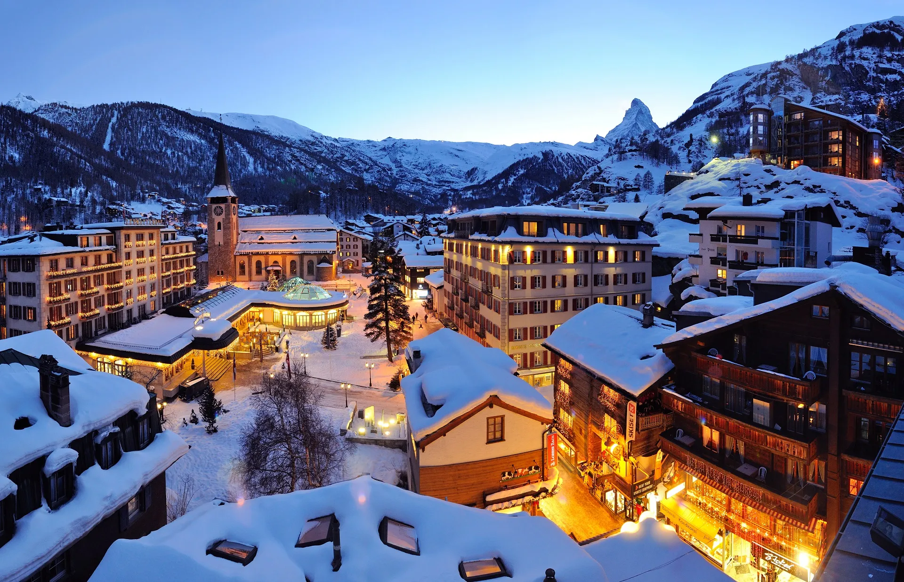
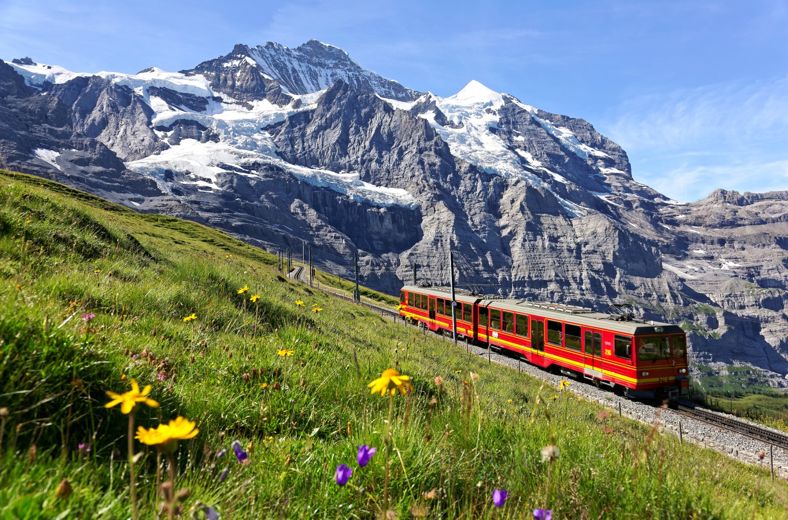
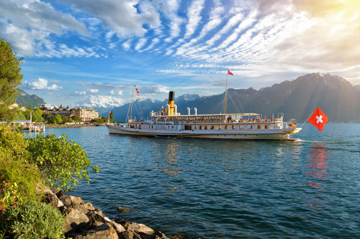

Matterhorn - Zermatt

Uma das montanhas mais icônicas do mundo, o Matterhorn impressiona
com sua forma piramidal perfeita. A região de Zermatt oferece esqui
de classe mundial no inverno e trilhas espetaculares no verão.
O teleférico leva você até mirantes com vistas de tirar o fôlego dos
Alpes suíços. Para os mais aventureiros, a escalada desta
montanha lendária é considerada um dos maiores desafios do
alpinismo.
Zermatt
permanece livre de carros, preservando seu charme alpino autêntico.
Jungfraujoch - Topo da Europa

Conhecido como o "Topo da Europa", Jungfraujoch oferece uma
experiência única a 3.454 metros de altitude. O famoso trem
cremalheira atravessa túneis escavados na rocha, levando você até
glaciares eternos.
A vista panorâmica dos picos nevados e a sensação de estar no topo
do mundo fazem desta uma aventura inesquecível. O
Palácio de Gelo escavado no glaciar Aletsch oferece
esculturas impressionantes.
Jungfrau Railways
opera este trajeto histórico desde 1912.
Lago de Genebra

O maior lago da Suíça encanta com suas águas cristalinas e cidades
pitorescas ao redor. Montreux, famosa pelo festival de jazz, e as
vinícolas em terraços de Lavaux criam cenários de cartão postal.
O famoso Jet d'Eau, com seus 140 metros de altura, marca a paisagem
de Genebra. Os vinhedos em terraços de Lavaux são
Patrimônio Mundial da UNESCO e produzem vinhos excepcionais.
Genebra combina
beleza natural com sofisticação cosmopolita.